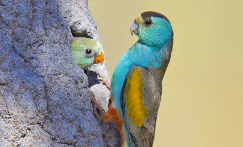
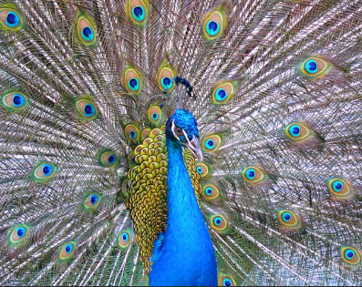
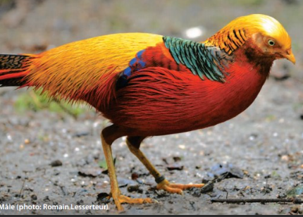
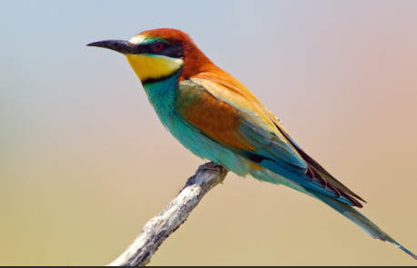

Ce sont en général les males qui ont un plumage exceptionnel. Que ne feraient-ils pas pour séduire les femelles ?
 Cette magnifique perruche à gauche, à ailes d'or est l'un des plus beaux oiseaux. Elle est menacée d'extinction. Puis à droite, sur que la femelle tombera sous le charme de tous ces yeux grands ouverts sur les plumes de ce paon.
 Le male faison doré à gauche, a une collerette extraordinairequi recouvre son bec quand il fait la cour à sa belle. Et ce guepier d'Europe à droite, a des couleurs tout en nuances, avec de superbes reflets argentés sur le ventre.